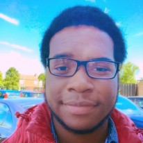

My name is Lewis Dillon and i am the creator of this website. I am 19 years of age at the time of creating this website. I have very little knowledge when it comes to adapting CSS however, i do know enough to make a basic layout.
Before university, I attended two years at my local college learning about networking. I say networking, but rather than being taught modules associated with networking, 50% of the modules ended up being more business related in the sense that we learned about Policies, how to work spreadsheets, communication in the workplace and even human computer interaction. These modules ended up being very similar to that of the computing business group. Honestly, I quite enjoyed my time there, I learnt a lot about the business side of the computing world of which I believe will help in the future.
Hello, I'm Lael Constance. I'm 20 years old and from Victoria, Seychelles of which is a small island located to the north of Madagascar. Recently (approximately 10 years ago, I moved to Harlow Essex with my family. From there, I started school at St. Marks’s West Essex where I met most of the mates I have today. At this school, was the first place I discover computing of which captured my interest. I continued Studying computing into GCSEs and six form where I developed a wide range of skills including how to run a project, configure a server and even create ethernet cables. In the coming 3 years year I hope to develop my I.T. skills to the point where I can have a I.T. related job (preferably with good pay) and be an asset in the work place.